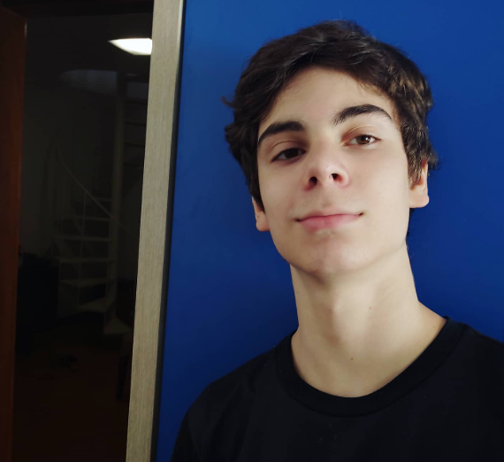

rafael leite villar
Eu sou alguém que ainda está em processo — e acho que essa é a forma mais honesta de me descrever. Não me vejo como algo pronto ou definido, mas como alguém que está constantemente mudando, aprendendo, errando e ajustando o próprio caminho. Eu penso muito sobre a vida, sobre as escolhas que faço e sobre o tipo de pessoa que eu quero me tornar. Às vezes isso me ajuda, às vezes me trava um pouco, mas faz parte de quem eu sou. Minha rotina hoje é bem puxada, e grande parte do meu tempo é dedicada aos estudos. Isso exige disciplina, constância e, principalmente, resistência emocional. Nem todo dia eu estou motivado, nem todo dia eu acordo com vontade de fazer o que precisa ser feito. Mas, mesmo assim, eu vou lá e faço. Eu aprendi que não dá pra depender só de motivação — ela falha. O que me sustenta mais é o compromisso que eu criei comigo mesmo. Mesmo assim, eu tento não me resumir a isso. Eu sei que sou mais do que uma rotina ou um objetivo específico. Eu tenho meus momentos de pausa, ainda que curtos. Gosto de ficar sozinho às vezes, em silêncio, organizando a cabeça. Tem dias em que eu só preciso parar um pouco e pensar — não necessariamente em algo específico, mas em tudo ao mesmo tempo. Outras vezes, eu sinto necessidade de estar com alguém, conversar, rir, sair um pouco dessa pressão constante. Esses momentos simples acabam sendo mais importantes do que parecem. Eu valorizo muito as relações que eu tenho. Não sou a pessoa mais aberta do mundo logo de cara, mas quando eu me conecto com alguém, é de forma sincera. Eu me importo de verdade, penso na pessoa, tento cuidar, mesmo que do meu jeito. Às vezes eu tenho dificuldade de expressar tudo em palavras, mas tento demonstrar nas atitudes. Eu também tenho minhas inseguranças — medo de não ser suficiente, de decepcionar, de não corresponder às expectativas, tanto dos outros quanto às minhas próprias. Isso pesa em alguns momentos, mas também me faz querer ser melhor. Eu tenho um lado bem introspectivo. Eu reflito muito sobre minhas decisões, sobre o que eu poderia ter feito diferente, sobre o que ainda dá tempo de mudar. Não é algo necessariamente negativo — é mais uma busca por clareza. Eu gosto de entender as coisas, de encontrar sentido no que eu faço. Mas também estou aprendendo que nem tudo precisa fazer sentido o tempo todo, e que às vezes é preciso só seguir, mesmo sem todas as respostas. Ao mesmo tempo, eu tenho ambição. Eu quero construir algo sólido na minha vida, algo que faça sentido pra mim. Não é tanto sobre reconhecimento externo, mas sobre orgulho interno. Eu quero olhar pra minha trajetória e saber que eu dei o meu máximo, que eu não fui alguém que desistiu quando ficou difícil. Eu me cobro bastante por isso, talvez até mais do que deveria. Mas essa cobrança também me impulsiona. Eu reconheço que não sou perfeito. Tenho dias em que eu não rendo, em que eu me distraio, em que eu duvido de mim mesmo. Tem momentos em que eu me sinto perdido, sem saber exatamente se estou indo na direção certa. Mas uma coisa que eu valorizo em mim é que eu sempre tento voltar. Eu posso até sair do ritmo por um tempo, mas dificilmente eu abandono o caminho. Existe uma persistência em mim que é silenciosa, mas muito forte. Também estou aprendendo a lidar melhor com o equilíbrio. Nem sempre é fácil conciliar responsabilidade com leveza. Muitas vezes eu sinto que deveria estar fazendo mais, produzindo mais, aproveitando melhor o tempo. Mas estou começando a entender que descansar também faz parte, que não dá pra viver só no limite o tempo todo. Ainda não encontrei esse equilíbrio totalmente, mas estou tentando. No fundo, eu sou alguém que quer crescer — não só em termos de conquistas, mas como pessoa. Eu quero ser mais consciente, mais forte emocionalmente, mais seguro de mim mesmo. Quero aprender a lidar melhor com minhas inseguranças, com minhas falhas, com minhas expectativas. E, principalmente, quero continuar evoluindo sem perder quem eu sou no processo. Eu não tenho todas as respostas, e talvez nunca tenha. Mas eu sigo. Pensando, tentando, ajustando. Um passo de cada vez, do jeito que dá. E, apesar de tudo, eu acredito que isso já é suficiente pra continuar em frente. Eu nunca fui alguém completamente definido. Sempre tive a sensação de estar me moldando conforme o tempo passa, como se cada fase da minha vida deixasse marcas que vão se acumulando e formando quem eu sou. Não é um processo linear, nem sempre faz sentido enquanto está acontecendo. Às vezes eu me sinto avançando, outras vezes parece que estou parado ou até voltando atrás. Mas, no fundo, eu sei que tudo isso faz parte de um crescimento que não é imediato, nem visível o tempo todo. Minha rotina hoje exige muito de mim, principalmente em termos de responsabilidade e constância. Eu aprendi a fazer o que precisa ser feito mesmo quando não estou com vontade, mesmo quando estou cansado, mesmo quando minha cabeça parece estar em outro lugar. Não é algo natural — foi algo que eu tive que construir com o tempo. E ainda estou construindo. Tem dias em que tudo flui melhor, em que eu consigo manter o foco e me sinto satisfeito com o que produzi. Mas também tem dias mais difíceis, em que tudo parece pesado, em que qualquer tarefa exige um esforço muito maior do que deveria. Apesar disso, eu tento não deixar que a minha vida se resuma a obrigações. Existe um lado meu que precisa de espaço, de silêncio, de tempo pra respirar. Eu gosto de pensar, de refletir, de tentar entender não só o que eu faço, mas por que eu faço. Às vezes eu me pego analisando minhas próprias atitudes, tentando identificar padrões, erros, coisas que eu posso melhorar. Não é uma cobrança constante, mas é uma espécie de atenção interna que eu desenvolvi. Eu também tenho momentos em que só quero desligar um pouco. Conversar sem pressa, rir sem motivo específico, sair da rotina rígida que, muitas vezes, domina meus dias. Esses momentos são importantes porque me lembram que eu não sou só alguém que precisa cumprir metas. Eu também sou alguém que sente, que precisa de conexão, que precisa viver coisas simples. Falando em conexão, eu dou muito valor às pessoas que fazem parte da minha vida. Eu não sou o tipo mais extrovertido ou expansivo, mas quando eu me aproximo de alguém, isso é sincero. Eu me importo, eu presto atenção, eu tento estar presente. Às vezes eu não sei expressar tudo com clareza, mas demonstro do jeito que consigo. Eu também tenho minhas inseguranças nesse aspecto — medo de não ser suficiente, de não conseguir corresponder, de acabar decepcionando. São pensamentos que aparecem mais do que eu gostaria, mas que também me fazem refletir sobre como eu posso ser melhor. Eu costumo ser uma pessoa mais introspectiva. Eu passo bastante tempo dentro da minha própria cabeça, organizando ideias, lembrando de situações, imaginando possibilidades. Às vezes isso é bom, porque me ajuda a ter mais clareza sobre as coisas. Outras vezes, pode ser cansativo, porque eu acabo pensando demais e complicando coisas que talvez fossem mais simples. Estou aprendendo a equilibrar isso, a não me perder tanto nos próprios pensamentos. Existe em mim uma vontade forte de construir algo significativo. Não só no sentido externo, de conquistas visíveis, mas internamente também. Eu quero sentir que estou evoluindo, que estou me tornando alguém mais preparado, mais consciente, mais firme. Eu não quero olhar pra trás e ter a sensação de que eu poderia ter feito mais e não fiz. Por isso, eu me cobro. Às vezes de forma exagerada, eu sei. Mas essa cobrança vem de um lugar que quer crescimento, não destruição. Eu também reconheço que tenho falhas. Tenho momentos de dúvida, de insegurança, de cansaço. Tem dias em que eu não consigo manter o ritmo que eu gostaria, em que eu me sinto desmotivado ou perdido. Nessas horas, é fácil questionar tudo — minhas escolhas, minhas capacidades, meu caminho. Mas, mesmo assim, eu continuo. Talvez não na velocidade ideal, talvez não da forma perfeita, mas continuo. E isso, pra mim, já significa muita coisa. Uma das coisas que eu mais tenho tentado aprender é o equilíbrio. Eu tenho uma tendência a ir muito para os extremos — ou estou totalmente focado, ou completamente esgotado. Encontrar um meio-termo ainda é um desafio. Entender que descansar não é perder tempo, que desacelerar não é fracassar, que nem tudo precisa ser levado ao limite o tempo todo… isso ainda está em construção dentro de mim. No fim das contas, eu sou alguém que está tentando fazer dar certo. Tentando crescer sem se perder, evoluir sem se cobrar além do necessário, construir algo sem deixar de viver. Eu sei que ainda tenho muito a aprender, muito a ajustar, muito a entender. Mas também sei que já percorri um caminho importante até aqui. Eu não tenho tudo resolvido, e talvez nunca tenha. Mas estou aprendendo a lidar com isso de uma forma mais tranquila. Nem tudo precisa estar claro pra que eu continue seguindo. Às vezes, confiar no processo já é o suficiente. E é isso que eu tenho feito: seguindo. Um dia de cada vez, com dúvidas, com esforço, com pequenas conquistas que nem sempre são visíveis, mas que fazem diferença. Eu sigo tentando ser alguém melhor do que fui ontem — não perfeito, mas consciente do caminho que estou construindo.